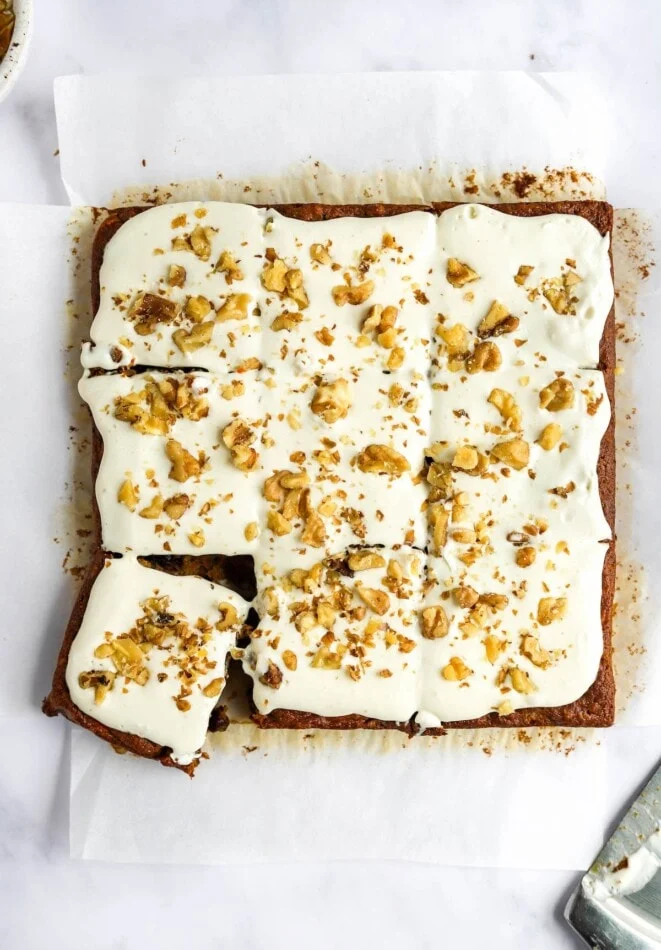

Paleo Carrot Cake Bars

Healthy carrot cake bars for the carrot cake lover in your life.
This simple to make paleo carrot cake recipe uses almond flour and maple syrup to create a delicious treat for all. Light and fluffy, perfect as a afternoon pick-me-up snack or a delicate dessert. This recipe is sure to be a fan favorite among the family!
Ingredients
- 1 cup almond flour
- 1/3 cup maple syrup
- 1 teaspoon baking powder
- 1/4 teaspoon baking soda
- 1/4 teaspoon ground cinnamon
- 1/8 teaspoon fine sea salt
- 2 large eggs
- 1/4 cup greek yogurt
- 1 teaspoon vanilla extract
- 1/2 teaspoon ginger powder
- 1/3 cup grated carrots
- 1/3 cup chopped raw walnuts, plus extra for garnish
- 1/4 cup raisins, optional
- 3 tablespoons dark chocolate chips, optional
Frosting
- 1 1/2 cups cream cheese frosting, optional
Instructions
- Preheat the oven to 350° F and line an 8-inch square baking dish with parchment paper or spray with non-stick cooking spray.
- In a large bowl, stir together the dry ingredients: almond flour, baking powder, baking soda, cinnamon, and salt until well blended.
- Whisk in the wet ingredients: eggs, yogurt, vanilla, maple syrup, and ginger, if using, until smooth.
- Fold in the carrots, walnuts, raisins, and chocolate chips, if using.
- Pour the mixture into the prepared pan, smooth out the top, and bake for about 25 minutes, until a toothpick comes out clean when inserted in the middle.
- While the cake is baking, prepare frosting and set aside.
- When the cake is done, let it cool completely in the pan before frosting or cutting.
- Spread the frosting evenly across the top of the cake and garnish with extra chopped walnuts, if desired. Cut into 9 to 12 bars to serve.
- Store the bars in an airtight container in the refrigerator for up to 5 days.